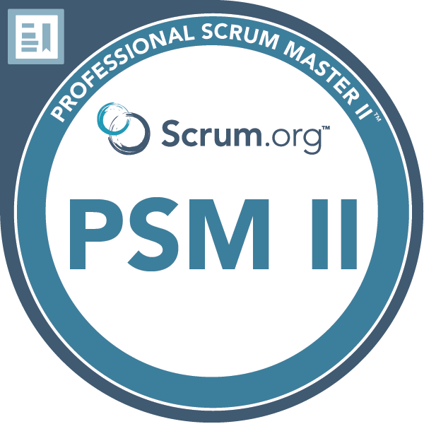
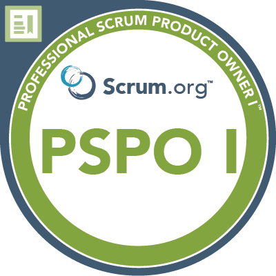
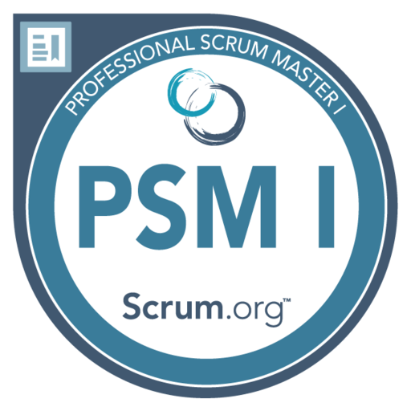

Verandering begeleiden
Teams coachen, Scrum introduceren en samen een werkbare aanpak vinden.
Scrum Master bij Klaverblad · Zoetermeer
Ik ben Hans. Ik help teams beter samenwerken en nieuwe werkwijzen eigen maken. Mijn volgende stap: die ervaring inzetten voor AI-adoptie.
Klaverblad
Ahold Delhaize
Q-Delft / Netcompany
Hogeschool van Amsterdam
Mens + techniek
+ een praktische blik.
Mijn loopbaan begon bij de helpdesk. Daar leerde ik luisteren, doorvragen en technische problemen begrijpelijk maken. Die basis neem ik nog steeds mee.
Via applicatiebeheer, testen en informatieanalyse groeide ik door naar Scrum Master en Product Owner. Ik ken het werk achter een idee én de samenwerking die nodig is om het verder te brengen.
Bij Klaverblad begeleid ik meerdere softwareteams en help ik de Agile werkwijze verbeteren. Ik wil daarop voortbouwen: collega’s helpen om AI te begrijpen en zinvol te gebruiken in hun dagelijkse werk.
Teams coachen, Scrum introduceren en samen een werkbare aanpak vinden.
Van requirements en analyses naar duidelijke keuzes voor teams, Product Owners en management.
Ervaring met innovatiepilots, product ownership en het introduceren van nieuwe toepassingen.
02 / BLIJVEN LEREN
Mijn vak blijft veranderen.
Ik ontwikkel mee.
Scrum.org · september 2026
Een gerichte aanvulling op mijn Scrum Master-ervaring: generatieve AI, effectief prompten en verantwoord AI-gebruik in de context van Scrum-teams.
Over deze certificering


CSPO Product Owner · Zilverline, 2015
TMAP-certificaten · Capgemini, 2007
ITIL Foundation · 2005
Van nieuwe aanpak
naar dagelijkse praktijk.
Als Scrum Master begeleid ik meerdere softwareontwikkelingsteams. Ik hielp de Agile werkwijze opzetten en werk aan de verdere verbetering ervan. Daarnaast ben ik assetmanager voor Jira en sinds 2026 lid van de ondernemingsraad.
Wat ik meeneem Dagelijkse ervaring met teambegeleiding, verandering en de organisatie van Klaverblad.
Als Product Owner werkte ik aan Mijn Etos: de klantenkaart, loyaliteitsapp en persoonlijke kortingen. Ook werkte ik aan pilots met Bol.com in Albert Heijn-winkels, persoonlijke aanbiedingen en mobiel zelfscannen.
Wat ik meeneem Nieuwe mogelijkheden vertalen naar concrete toepassingen en ervaring opdoen met pilots.
Voor Koninklijke Onderscheidingen / lintjes.nl hielp ik als Scrum Master het project weer op koers te krijgen en Agile werken opnieuw onder de aandacht te brengen.
Wat ik meeneem Werken aan een gezamenlijke aanpak, ook als een project bijsturing nodig heeft.
Een brede IT-basis.
Steeds dichter bij mensen.
Scrum Master
Meerdere softwareteams, Agile werkwijze en Jira. Lid van de ondernemingsraad sinds 2026.
Scrum Master
Koninklijke Onderscheidingen / lintjes.nl. Projectbegeleiding en herintroductie van Agile werken.
Zelfstandig consultant · Scrum Master
Onder meer voor Ahold Delhaize bij de vervanging van Albert Heijn-winkelapplicaties door OutSystems-applicaties.
Testcoördinator → Informatieanalist → Scrum Master / Product Owner
Opdrachten via Capgemini, Atos en als zelfstandige. Winkel-IT, offshore testprocessen, Scrum-introductie en innovatiepilots. Deze klantperiode overlapt met mijn zelfstandige werk.
Applicatiebeheer en support
Van frontoffice en helpdesk naar applicatiebeheer, probleemanalyse en projecten.
Helpdesk en frontoffice
Onder meer Sykes / Gateway Computers, Leaf / Red Band Venco en een desktop-rollout bij Triodos Bank.
OPLEIDING
Hogeschool van Amsterdam · HEAO
Johannes College · Den Helder